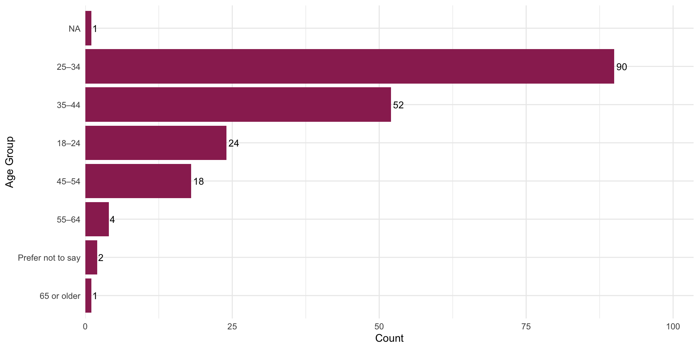
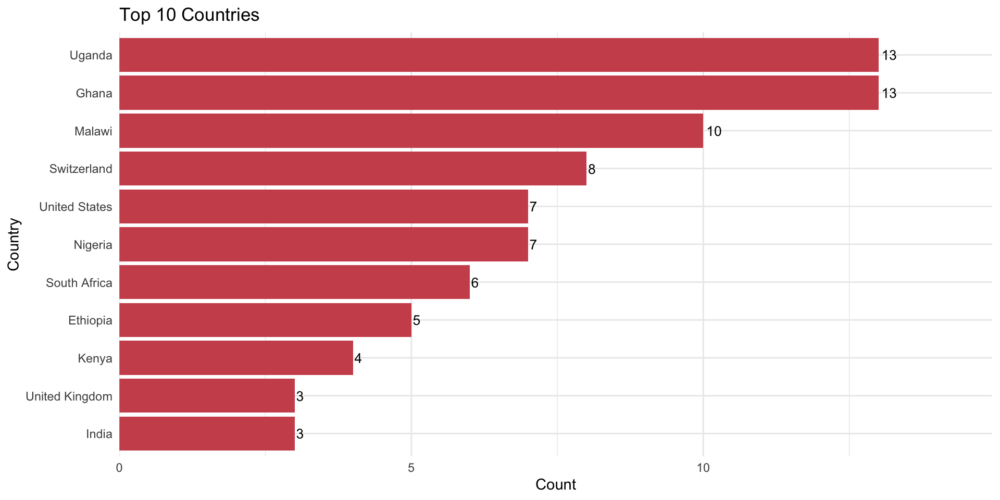
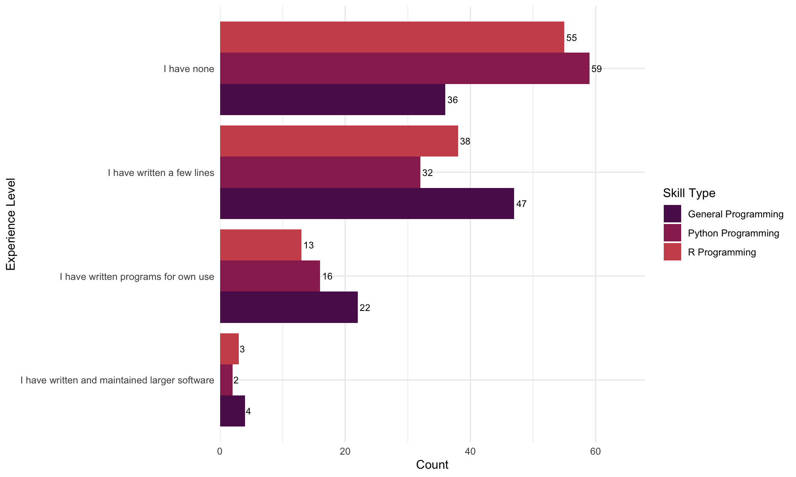

| date | week | topic | module |
|---|---|---|---|
| 11 September 2025 | 1 | Welcome & get ready for the course | module 1 |
| 18 September 2025 | 2 | Data science lifecycle & Exploratory data analysis using visualization | module 2 |
| 25 September 2025 | 3 | Data transformation with dplyr | module 3 |
| 02 October 2025 | 4 | Data import & Data organization in spreadsheets | module 4 |
| 09 October 2025 | 5 | No class | NA |
| 16 October 2025 | 6 | No class | NA |
| 23 October 2025 | 7 | Conditions & Dates & Tables | module 5 |
| 30 October 2025 | 8 | Data types & Vectors & For Loops | module 6 |
| 06 November 2025 | 9 | Pivoting & joining data | module 7 |
| 13 November 2025 | 10 | Creating and publishing scholarly articles with Quarto and GitHub pages | module 8 |
| 20 November 2025 | 11 | Bonus module: Use of AI for coding support | module 9 |
| 27 November 2025 | 12 | Work on Capstone project | NA |
| 04 December 2025 | 13 | Work on Capstone project | NA |
| 11 December 2025 | 14 | Final submission date of Capstone project | NA |
| 18 December 2025 | 15 | Graduation of openwashdata academy | module 10 |
Q&A Session - Questions about the course
ds4owd - data science for openwashdata
Welcome! 👋
Meet the team
Adriana Clavijo

- Data Scientist
- Spanish language support
Learning Goals (for the course)
Master data science tools - Use (R, RStudio IDE, Git, GitHub, tidyverse, Quarto) to analyze and communicate data effectively.
Create reproducible documents - Produce professional reports with Quarto, including citations, figures, and tables.
Practice open science - Share your data and code openly, following best practices for reproducibility and collaboration.
Build a portfolio - Complete real-world projects that demonstrate your skills to future employers or collaborators.
Course Calendar
Course information
Weekly Structure
| Monday | |
| Tuesday | Office hours on Zoom from 2 pm to 3 pm CET |
| Wednesday | |
| Thursday | Module on Zoom from 2 pm to 4:30 CET |
| Friday |
Mentorship program
- We are planning to create mentorship study groups for participants
- The number of potential mentors is limited
- We will match people with more experience with those who are complete novices
- The mentorship program will be optional and starts after the Module 2 or Module 3
Assignments
Quiz
- Identify students’ understanding of the material covered in the previous week
- Expected to be completed within two weeks after the lecture
- Identifies if students participated in live lecture or watched the recording
- Successful completion of the course will require students to complete all quizzes
Homework assignments
- Weekly assignments
- Submitted as rendered Quarto documents on GitHub
- Reviewed by course instructors for errors and feedback
- Management and support through GitHub issue tracker
Readings
- Weekly readings to deepen understanding of the topics
- All readings from R for Data Science, 2nd edition: https://r4ds.hadley.nz/
Capstone Project
- Data analysis project report with a dataset of your choice
- Ideally, a dataset that you are working with in your job or research
- Data must be non-sensitive without personal identifiable information (PII) and suitable for open data publication
- Report will be a public website (see examples from ds4owd-001)
- Submission required for successful completion of the course
openwashdata R data packages
- Publish all datasets from participants as open data, following openwashdata workflows
- Data package will be a public website
- We will support the data curation and publication process
Who has signed up (109 so far)?
Age group

Country of residence

Programming skills

What’s next?
Zoom Registration
- You will receive an email with a registration link for the Zoom meetings for each module
- Please register for the Zoom meetings
- Hold onto the confirmation email, as it contains the link to the Zoom meeting
- Ensure that you have a Zoom account, so that you can join the meetings
Module 1
- Module 1 starts on Thursday, 11th September 2025
Wrap-up
Thanks! 🌻
Slides created via revealjs and Quarto: https://quarto.org/docs/presentations/revealjs/ Access slides as PDF on GitHub
All material is licensed under Creative Commons Attribution Share Alike 4.0 International.